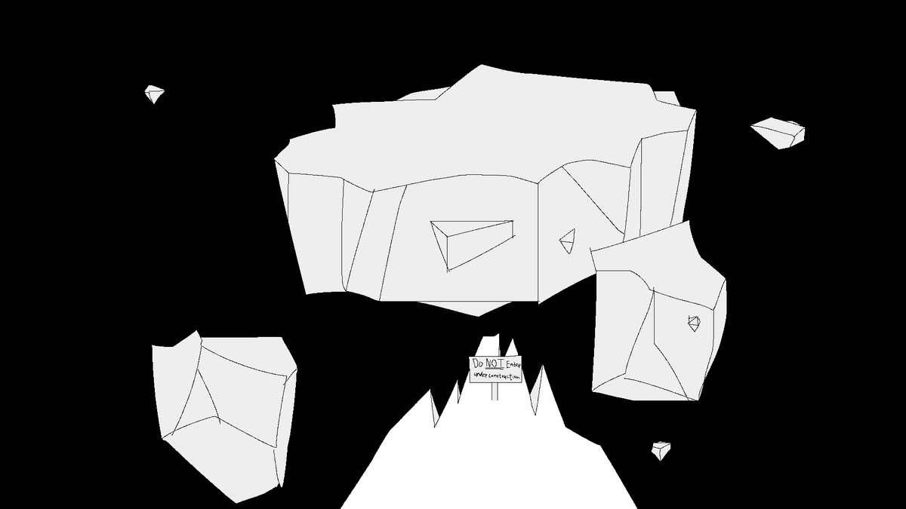
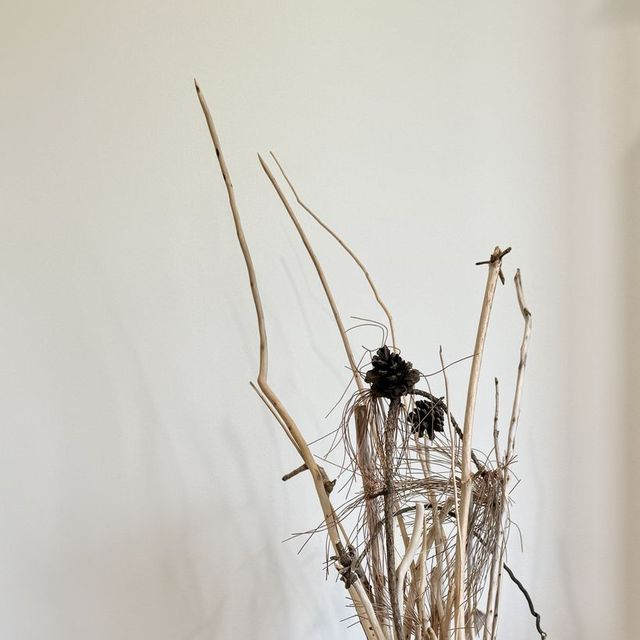
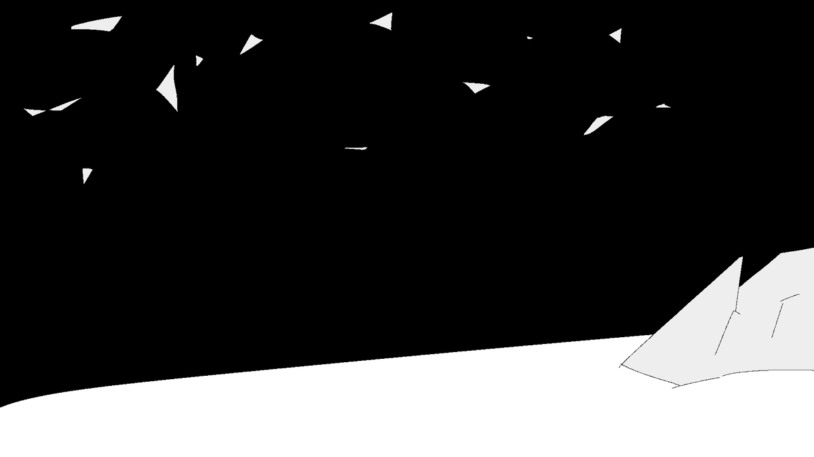
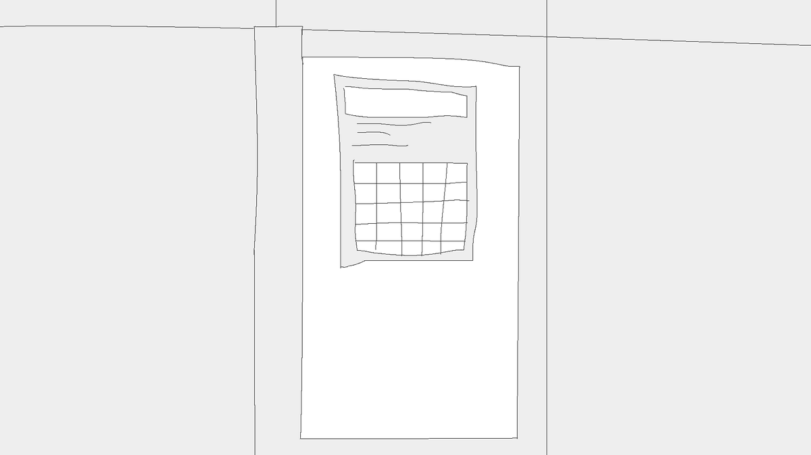

Your PC has a virus and tech support is ten minutes away. Find the password before the files are gone.
in progress · video 02A hacker's virus spreads through red wires; you hunt it down the blue ones. Every tile you place has to keep the circuit legal.
playable · printed 03A point-and-click visual novel about the place where abandoned games, assets and ideas go. You are looking at it.
under construction 04Find the weapon before night falls, then survive. I built the level and the spawn system.
playable · video 05Get ready for work before the timer runs out. Based on the mornings my mom can't find her phone.
printed · playable
They almost look… flat. Ideas that haven't become games yet: a bow that fires the words you say, a kitchen where none of the ingredients are yours, a scope that only shows the future as riddles.
Look closer →